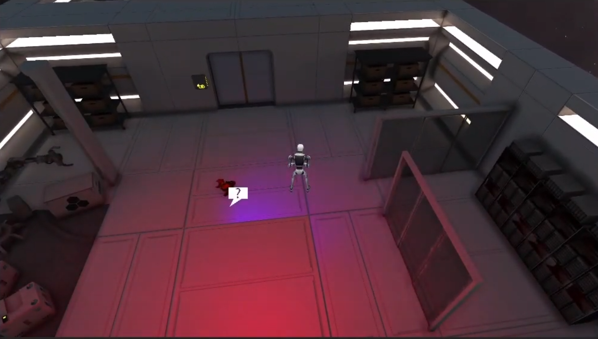

This project was a small assignment I had during my studies at Dundalk's Institute of Technology.
The main task was to make a top-down URP project with some minimum requirements such as interactions,
inventory systems, dialogue, winning and losing conditions, as well as the use of pathfinding to generate
a point-and-click movement. Despite it being a small and simple project, I use most of the techniques learned
in my current projects.
Story & Design Goals
The story is about a robot who suddenly gains consciousness after a collision with another robot, both realizing that they
are stuck in a corporate world where each machine serves a purpose;
Those who don't stick to that purpose get scrapped and converted into new units.
With the sole purpose of finding freedom, both machines team up to find a way out of the facility.
From the top level of the facility, the player needs to keep heading down until reaching
ground level. Once this is achieved, they can escape through one of the gates.

For the design of the game, I tried to keep complexity to a minimum, but with each task required for the assignment in mind.
Contrary to what I intended at first, for the purpose of quickly getting the player used to the controls and how to
interact with the world, I chose to break immersion and directly addressed the player in the tutorial.
Utilizing Unity's Nav mesh, I was able to quickly program and test both player movement and enemy movement.
However, I didn't want the enemies to immediately know and track down the player; Instead, I opted for giving
it different states.
One being standard patrol, through a predetermined path; chasing for when it sees the player and searching for
when it loses sight. This last state remains active for a few seconds as it leads the enemy towards the player's
last known location and then looks around that area before going back to patrolling, unless it finds the player,
which would prompt a new chase.
To accommodate my design choices to provide player feedback that is compliant with the world, the enemy's light
(which represents the vision cone) changes color depending on their current state. It being red to signify a
chase state and provide a sense of danger.
In addition, there is a sound component attached to the enemy AI that makes the presence known, as the music plays
louder when closer to the player. If the player does not see the light, they can use their hearing to tell where
enemies are before being detected or even seeing them.
Probably the most challenging part of the project, as the light on the editor never did look like the one on build or
play time. I never truly found out whether it was a bug within the engine or if I was doing something wrong when making
them. Unfortunately, I did not have much time to give it the proper attention as I was on a tight schedule.
I used different types of lights since realtime lights are limited on URP and they take extra rendering power that
will affect framerate. For things such as room lighting, I kept realtime to add immersion. However, for static objects
that don't really need to cast shadows, I used baked lights.
It didn't take long for me to realize that having bake lights on items that may disappear, like the keycard, resulted
in light effects on walls and floors with the light source no longer being there. This forced me to change my strategy
and make baked lights out of the ones that do not disappear or change throughout the level. Losing a bit of realism in
exchange for better performance.
URP settings seemed to also conflict on how the lighting worked and affected the game.
However, my inexperience managing it lowered the quality of the game's looks.
For the interactions, I decided to play around with zooming into objects and being able to move them around.
This mechanic is something I have always been a fan of, utilized in games such as "Resident Evil" or "Escape Simulator."
I am always intrigued by the way things are made, so I always make it an extra challenge to try to reproduce them.
The actual coding behind it is rather simple, but it adds to the player's interaction with the world.
Sometimes it is hard to immerse yourself in a world that you can barely associate with, making you more
of an observer rather than an important actor within the universe.
Apart from the lighting challenges stated above, the URP engine seemed quite complex at first. However,
I have managed to get better results and be more comfortable with future projects such as "Pestis."
Camera movement was a bit of a problem at first, given that some of the walls were rather thick and I needed
to adjust its movement and zoom to allow the player to both see what they were doing and get as much information
as possible from their surroundings to then make decisions. Camera movement also needed to be smoothed to avoid
creating nausea, which took some iterations but was not a major issue.
Learning Outcomes & Technical Playthrough
I believe that one of the most valuable lessons I had during this project was the importance of generating early builds to
test discrepancies between the editor and the final product, as well as some insight into possible issues and pre-planning
regarding lighting and use of static objects.
Moreover, I got used to the player's input module provided by Unity and its use of events to trigger certain methods without
the need to run checks through the update. It is by the use of delegates that I now run important checks on my game without
polluting Update methods that run every frame.